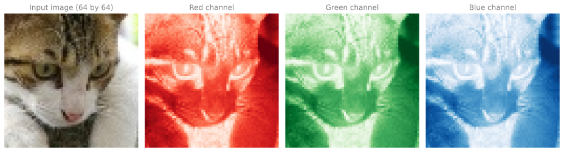
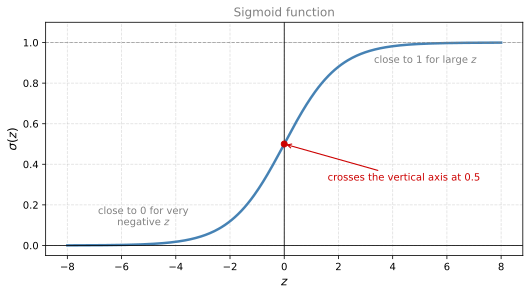
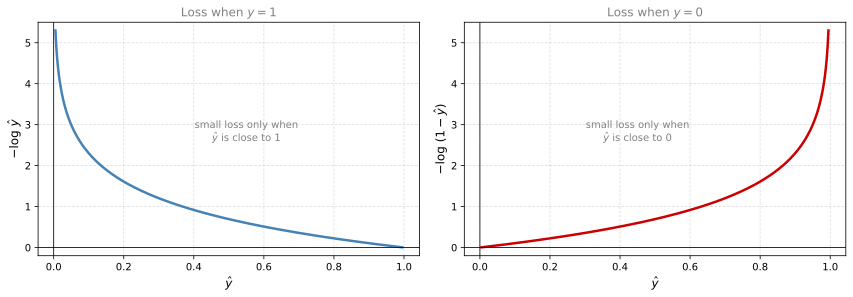
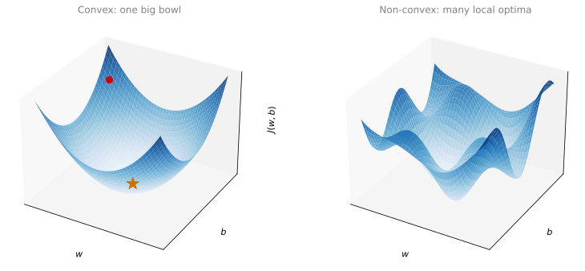
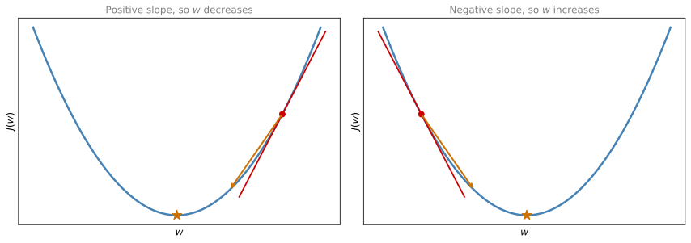

Logistic Regression as a Neural Network
deep-learning
logistic-regression
neural-networks
Binary classification notation for images, the logistic regression model with the sigmoid, the log loss and cost functions, and gradient descent.
This part of the course covers the basics of neural network programming. It turns out that when you implement a neural network, there are some implementation techniques that are really important. For example, if you have a training set of \(m\) training examples, you might be used to processing it with a for loop that steps through the examples one at a time. But when you implement a neural network, you usually want to process the entire training set without an explicit for loop. You will see how to do that in a later section on vectorization.
Another idea. When you organize the computation of a neural network, you usually have a forward pass (forward propagation) step followed by a backward pass (backward propagation) step. You will also get an introduction to why the computations can be organized this way.
To make the ideas easier to understand, this section conveys them using logistic regression, which you already met in the machine learning course. Even if you have seen logistic regression before, there are some new and interesting ideas to pick up here, starting with new notation built for neural networks.
Binary Classification
Logistic regression is an algorithm for binary classification. Here is an example of a binary classification problem. You have an input image, and you want to output a label recognizing the image as either a cat (output 1) or not a cat (output 0). We use \(y\) to denote the output label.
How a Computer Stores an Image
To store an image, your computer stores three separate matrices corresponding to the red, green, and blue color channels of the image. If your input image is 64 pixels by 64 pixels, you have three 64 by 64 matrices of pixel intensity values.
To turn these pixel intensity values into a feature vector, we unroll all of them into an input feature vector \(x\). We take all the pixel values from the red matrix (255, 231, and so on), then all the green values, then all the blue values, and list them in one long column vector.
\[ x = \begin{bmatrix} 255 \\ 231 \\ \vdots \\ 255 \\ 134 \\ \vdots \end{bmatrix} \]
For a 64 by 64 image, the total dimension of this vector is
\[ n_x = 64 \times 64 \times 3 = 12288 \]
because that is the total count of numbers in the three matrices. We use \(n_x\) to denote the dimension of the input features, and sometimes just lowercase \(n\) for brevity.
So in binary classification, our goal is to learn a classifier that inputs an image represented by its feature vector \(x\) and predicts whether the corresponding label \(y\) is 1 or 0, that is, whether this is a cat image or a non-cat image.
Notation
Here is the notation used throughout the rest of this course.
NoteNotation
- A single training example is a pair \((x, y)\) where \(x \in \mathbb{R}^{n_x}\) is the feature vector and \(y \in \{0, 1\}\) is the label.
- The training set contains \(m\) training examples \((x^{(1)}, y^{(1)}), (x^{(2)}, y^{(2)}), \ldots, (x^{(m)}, y^{(m)})\). The superscript \(^{(i)}\) in parentheses always refers to the \(i\)-th training example.
- \(m\) is the number of training examples. To emphasize this we sometimes write \(m = m_{\text{train}}\), and \(m_{\text{test}}\) denotes the number of test examples.
- Unlike the machine learning course, this course does not draw arrows over vectors. A plain lowercase letter such as \(x\) or \(w\) can be a vector; its type is stated when it is introduced.
To put all the training examples into more compact notation, we define a matrix \(X\) by taking the inputs \(x^{(1)}, x^{(2)}, \ldots\) and stacking them in columns. So \(x^{(1)}\) is the first column, \(x^{(2)}\) is the second column, and so on down to \(x^{(m)}\).
\[ X = \begin{bmatrix} | & | & & | \\ x^{(1)} & x^{(2)} & \cdots & x^{(m)} \\ | & | & & | \end{bmatrix} \]
This matrix has \(m\) columns, where \(m\) is the number of training examples, and its height (number of rows) is \(n_x\). In other courses you might see \(X\) defined by stacking the training examples in rows, \(x^{(1)\,T}\) down to \(x^{(m)\,T}\). It turns out that when you implement neural networks, the column convention makes the implementation much easier. To recap, \(X\) is an \(n_x \times m\) matrix, and in Python X.shape returns (n_x, m).
How about the output labels? To make the implementation easier, it is convenient to also stack the labels in columns.
\[ Y = \begin{bmatrix} y^{(1)} & y^{(2)} & \cdots & y^{(m)} \end{bmatrix} \]
Here \(Y\) is a \(1 \times m\) matrix, so Y.shape is (1, m). As you implement neural networks later in this course, you will find that a useful convention is to take the data associated with different training examples (whether \(x\), \(y\), or other quantities you will see later) and stack them in different columns, exactly as we did here for both \(X\) and \(Y\).
Review Questions
1. A color image is 64 pixels by 64 pixels. What is the dimension \(n_x\) of its feature vector, and where does that number come from?
TipAnswer
\(n_x = 64 \times 64 \times 3 = 12288\). The image is stored as three 64 by 64 matrices (red, green, and blue channels), and unrolling all the pixel intensity values into one column vector gives \(64 \times 64 \times 3\) numbers.
1. How is the matrix \(X\) built from the training examples, and what is its shape?
TipAnswer
Each training input \(x^{(i)}\) becomes one column of \(X\), so \(X\) is an \(n_x \times m\) matrix. In Python, X.shape is (n_x, m).
1. Some courses stack training examples as rows of \(X\). Why does this course stack them as columns instead?
TipAnswer
Because the column convention makes the neural network implementation much easier. The same column convention is used for the labels \(Y\) and for other per-example quantities later in the course.
1. Suppose you have \(n_x\) input features per example, and you decide to use row vectors \(x_1, \ldots, x_m\) for the features, stacking them as the rows of \(X\),
\[ X = \begin{bmatrix} x_1 \\ x_2 \\ \vdots \\ x_m \end{bmatrix} \]
What is the dimension of \(X\)?
- \((m, n_x)\)
- \((1, n_x)\)
- \((n_x, n_x)\)
- \((n_x, m)\)
TipAnswer
a. Each row vector \(x_j\) has dimension \(1 \times n_x\), and stacking all \(m\) of them as rows gives an \(m \times n_x\) array. Note the contrast with this course’s convention, which stacks column vectors \(x^{(i)}\) side by side, giving the transposed shape \((n_x, m)\). The point of the question is that the shape of \(X\) follows from whichever stacking convention you commit to.
1. What does the superscript \(^{(i)}\) mean, for example in \(x^{(i)}\)?
TipAnswer
It refers to data associated with the \(i\)-th training example. The parentheses distinguish it from other superscripts introduced later in the course.
Logistic Regression
Logistic regression is a learning algorithm you use when the output labels \(y\) in a supervised learning problem are all either 0 or 1, so for binary classification problems.
Given an input feature vector \(x\) (maybe corresponding to an image that you want to recognize as a cat picture or not a cat picture), you want an algorithm that outputs a prediction \(\hat{y}\) (read “y hat”), your estimate of \(y\). More formally, you want
\[ \hat{y} = P(y = 1 \mid x) \]
the probability that \(y\) equals 1 given the input features \(x\). In other words, if \(x\) is a picture, \(\hat{y}\) should tell you the chance that this is a cat picture.
The parameters of logistic regression are \(w \in \mathbb{R}^{n_x}\), a vector with the same dimension as \(x\), together with \(b\), which is just a real number. Given the input \(x\) and the parameters \(w\) and \(b\), how do we generate \(\hat{y}\)?
One thing you could try (that does not work) is \(\hat{y} = w^T x + b\), a linear function of the input. In fact, that is what you use in linear regression. But it is not a good algorithm for binary classification, because you want \(\hat{y}\) to be a probability, so it should be between 0 and 1. That is difficult to enforce, because \(w^T x + b\) can be much bigger than 1, or even negative, which does not make sense for a probability.
So in logistic regression the output is instead the sigmoid function applied to that quantity. We use \(z\) to denote the linear part,
\[ z = w^T x + b \]
and the prediction is
\[ \hat{y} = \sigma(z) = \frac{1}{1 + e^{-z}} \]

The sigmoid goes smoothly from 0 up to 1 and crosses the vertical axis at 0.5. Notice a couple of things about the formula.
- If \(z\) is very large, then \(e^{-z}\) is close to 0, so \(\sigma(z) \approx \dfrac{1}{1 + 0}\), which is close to 1.
- If \(z\) is very small (a very large negative number), then \(e^{-z}\) becomes a huge number, so \(\sigma(z)\) is 1 over 1 plus something very big, which is close to 0.
So when you implement logistic regression, your job is to learn parameters \(w\) and \(b\) so that \(\hat{y}\) becomes a good estimate of the chance of \(y\) being 1.
NoteAside: a Notation This Course Does Not Use
In some conventions, you define an extra feature \(x_0 = 1\), so that \(x \in \mathbb{R}^{n_x + 1}\), and write \(\hat{y} = \sigma(\theta^T x)\) with a single parameter vector \(\theta = (\theta_0, \theta_1, \ldots, \theta_{n_x})\). There \(\theta_0\) plays the role of \(b\) and the rest play the role of \(w\). It turns out that when you implement neural networks, it is easier to keep \(b\) and \(w\) as separate parameters, so this course does not use the \(\theta\) convention. If you have never seen it before, do not worry about it.
Review Questions
1. In logistic regression, given the input \(x\) and parameters \(w \in \mathbb{R}^{n_x}\) and \(b \in \mathbb{R}\), how do we generate the output \(\hat{y}\)?
- \(\hat{y} = \sigma(w^T x)\)
- \(\hat{y} = w^T x + b\)
- \(\hat{y} = \tanh(w^T x + b)\)
- \(\hat{y} = \sigma(w^T x + b)\)
TipAnswer
d. Logistic regression applies the linear function \(w^T x + b\) followed by the sigmoid function \(\sigma\), so that the output satisfies \(0 < \hat{y} < 1\) and can be interpreted as a probability. Option a. drops the bias, option b. is the bare linear score, which can be negative or bigger than 1, and option c. uses a different squashing function whose output lands in \((-1, 1)\), so it cannot be read as a probability.
1. What does \(\hat{y}\) represent in logistic regression?
TipAnswer
The estimated probability that the label is 1 given the input features, \(\hat{y} = P(y = 1 \mid x)\). For a picture, it is the chance that the picture is a cat.
1. Why is the linear function \(w^T x + b\) by itself not a good output for binary classification?
TipAnswer
Because \(\hat{y}\) should be a probability between 0 and 1, while \(w^T x + b\) can be much bigger than 1 or even negative. Applying the sigmoid squashes the linear score into the interval \((0, 1)\).
1. What is \(\sigma(z)\) approximately equal to when \(z\) is very large, and when \(z\) is a very large negative number?
TipAnswer
For very large \(z\), \(e^{-z} \approx 0\), so \(\sigma(z) \approx 1\). For very large negative \(z\), \(e^{-z}\) is huge, so \(\sigma(z) \approx 0\).
1. What are the parameters of logistic regression?
- \(w\), an identity vector, and \(b\), a real number.
- \(w\), an \(n_x\) dimensional vector, and \(b\), a real number.
- \(w\) and \(b\), both real numbers.
- \(w\) and \(b\), both \(n_x\) dimensional vectors.
TipAnswer
b. The weight vector \(w\) has one entry per input feature, so \(w \in \mathbb{R}^{n_x}\) (12288 numbers for a 64 by 64 color image). The bias \(b\) is a single real number, \(b \in \mathbb{R}\). That shape is forced by \(z = w^T x + b\), where \(w^T x\) only makes sense if \(w\) has the same dimension as \(x\), and the result is a scalar that \(b\) then shifts.
1. Why does this course keep \(w\) and \(b\) separate instead of merging them into one parameter vector \(\theta\) with an extra \(x_0 = 1\) feature?
TipAnswer
Because keeping \(b\) (the bias, a real number) and \(w\) (the weights) separate makes the neural network implementation easier.
Logistic Regression Cost Function
To train the parameters \(w\) and \(b\), you need to define a cost function. To recap, the model is
\[ \hat{y} = \sigma(w^T x + b), \qquad \sigma(z) = \frac{1}{1 + e^{-z}} \]
Given a training set of \(m\) examples, it seems natural to want to find parameters \(w\) and \(b\) so that, at least on the training set, the predictions \(\hat{y}^{(i)}\) are close to the ground truth labels \(y^{(i)}\). Spelling out the per-example prediction with the superscript notation,
\[ \hat{y}^{(i)} = \sigma(z^{(i)}), \qquad z^{(i)} = w^T x^{(i)} + b \]
Loss Function
The loss function (or error function) \(\mathcal{L}\) measures how well the algorithm is doing on a single training example, when it outputs \(\hat{y}\) and the true label is \(y\).
One thing you could do is use the squared error \(\frac{1}{2}(\hat{y} - y)^2\), as in linear regression. It turns out you could, but in logistic regression people usually do not, because when you come to learn the parameters, the optimization problem becomes non-convex. You end up with multiple local optima, so gradient descent may not find the global optimum. The same issue was discussed for the logistic cost function in the machine learning course. If those comments do not fully land yet, do not worry, the gradient descent section below makes them concrete.
So in logistic regression we define a different loss function that plays a similar role as squared error but gives a convex optimization problem, which is much easier to optimize.
\[ \mathcal{L}(\hat{y}, y) = -\big(y \log \hat{y} + (1 - y) \log(1 - \hat{y})\big) \]
Here is some intuition for why this loss function makes sense. As with squared error, we want the loss to be as small as possible. Look at the two cases.
- If \(y = 1\), the second term vanishes and \(\mathcal{L}(\hat{y}, y) = -\log \hat{y}\). Making the loss small means making \(\log \hat{y}\) large, which means making \(\hat{y}\) large. Since \(\hat{y}\) comes from the sigmoid, it can never be bigger than 1, so the loss pushes \(\hat{y}\) close to 1, which is what we want when the true label is 1.
- If \(y = 0\), the first term vanishes and \(\mathcal{L}(\hat{y}, y) = -\log(1 - \hat{y})\). Making the loss small means making \(\hat{y}\) as small as possible, and since \(\hat{y}\) lives between 0 and 1, the loss pushes \(\hat{y}\) close to 0.

There are a lot of functions with roughly this effect (if \(y = 1\), push \(\hat{y}\) up; if \(y = 0\), push \(\hat{y}\) down). This was an informal justification for this particular loss function. A more formal justification appears in an optional section later in the course.
Cost Function
The loss function was defined with respect to a single training example. The cost function \(J\) measures how well you are doing on the entire training set. It is applied to your parameters \(w\) and \(b\), and it is the average of the loss over the \(m\) training examples.
\[ J(w, b) = \frac{1}{m} \sum_{i=1}^{m} \mathcal{L}(\hat{y}^{(i)}, y^{(i)}) = -\frac{1}{m} \sum_{i=1}^{m} \Big[ y^{(i)} \log \hat{y}^{(i)} + (1 - y^{(i)}) \log(1 - \hat{y}^{(i)}) \Big] \]
Here \(\hat{y}^{(i)}\) is the prediction output by your logistic regression algorithm using a particular set of parameters \(w\) and \(b\). The terminology to remember is that the loss function applies to a single training example, and the cost function is the cost of your parameters on the whole training set. In training the model, we will find parameters \(w\) and \(b\) that minimize the overall cost function \(J\).
It turns out that logistic regression can be viewed as a very, very small neural network, which is where the intuition for bigger networks starts.
Review Questions
1. Why does logistic regression not use the squared error loss?
TipAnswer
With squared error, the optimization problem for learning \(w\) and \(b\) becomes non-convex, with multiple local optima, so gradient descent may not find the global optimum. The log loss gives a convex optimization problem that is much easier to optimize.
1. What does the loss reduce to when \(y = 1\), and what does minimizing it push \(\hat{y}\) toward?
TipAnswer
When \(y = 1\), the loss is \(-\log \hat{y}\). Minimizing it makes \(\hat{y}\) as large as possible, and since the sigmoid keeps \(\hat{y}\) below 1, the loss pushes \(\hat{y}\) close to 1.
1. What is the difference between the cost function \(J\) and the loss function \(\mathcal{L}\) for logistic regression?
- The cost function computes the error for a single training example, and the loss function is the average of the cost functions of the entire training set.
- They are different names for the same function.
- The loss function computes the error for a single training example, and the cost function is the average of the loss functions of the entire training set.
TipAnswer
c. The loss function measures how well the model does on a single training example. The cost function measures how well the parameters \(w\) and \(b\) do on the entire training set, and it is the average of the loss over all \(m\) examples. Option a. has the two swapped. Gradient descent minimizes \(J\), not any individual \(\mathcal{L}\), which is why the distinction matters.
1. Suppose that \(\hat{y} = 0.5\) and \(y = 0\). What is the value of the logistic loss?
- 0.693
- \(\mathcal{L}(\hat{y}, y) = -\big( y \log \hat{y} + (1 - y) \log(1 - \hat{y}) \big)\)
- \(+\infty\)
- 0.5
TipAnswer
a. Plugging the values into the loss, \[ \mathcal{L}(0.5, 0) = -\big( 0 \cdot \log 0.5 + 1 \cdot \log(1 - 0.5) \big) = -\log 0.5 \approx 0.693 \] Option b. is just the definition of the loss, not its value, and the loss only heads toward \(+\infty\) when the prediction is confidently wrong (\(\hat{y} \to 1\) while \(y = 0\)), not at \(\hat{y} = 0.5\).
1. Write the cost function \(J(w, b)\) for logistic regression.
TipAnswer
\[ J(w, b) = -\frac{1}{m} \sum_{i=1}^{m} \Big[ y^{(i)} \log \hat{y}^{(i)} + (1 - y^{(i)}) \log(1 - \hat{y}^{(i)}) \Big] \] where \(\hat{y}^{(i)} = \sigma(w^T x^{(i)} + b)\).
Gradient Descent
You have seen the model, the loss function, and the cost function. Now let us talk about how to use the gradient descent algorithm to learn the parameters \(w\) and \(b\) on your training set. You met gradient descent in the machine learning course; here is how it applies to the logistic regression cost.
We want to find \(w\) and \(b\) that make \(J(w, b)\) as small as possible. Picture the horizontal axes as your space of parameters \(w\) and \(b\) (in practice \(w\) is much higher dimensional, but for plotting, treat \(w\) and \(b\) as single numbers). The cost \(J(w, b)\) is then a surface above these axes, and the height of the surface represents the value of \(J\) at a certain point. We want to find the value of \(w\) and \(b\) that corresponds to the minimum of that surface.

It turns out that this particular cost function \(J\) is a convex function, just a single big bowl, as opposed to non-convex functions with lots of different local optima. The fact that our cost function is convex is one of the huge reasons we use this particular cost \(J\) for logistic regression.
To find a good value for the parameters, we first initialize \(w\) and \(b\) to some initial value (the red dot on the bowl). For logistic regression almost any initialization method works. Usually you initialize the values to 0. Random initialization also works, but people do not usually do that for logistic regression. Because the function is convex, no matter where you initialize, you should get to the same point, or roughly the same point.
Gradient descent starts at that initial point and takes a step in the steepest downhill direction. After one step you might end up a bit lower on the bowl, after two iterations lower still, and so on, until eventually you converge to the global optimum (the orange star), or get close to it.
Update Rule
For the purpose of illustration, say there is some function \(J(w)\) of one parameter that you want to minimize (ignore \(b\) for a moment so the plot is one dimensional). Gradient descent repeatedly carries out the following update.
\[ w := w - \alpha \frac{dJ(w)}{dw} \]
The symbol \(:=\) means “update \(w\) to be”. A couple of points about this rule.
- \(\alpha\) is the learning rate. It controls how big a step we take on each iteration of gradient descent. Choosing \(\alpha\) is discussed later in the course.
- The derivative \(\frac{dJ(w)}{dw}\) is the change you make to the parameter \(w\). When we write code, we use the convention that the variable name
dwrepresents this derivative term, so the update line readsw = w - alpha * dw.

Let us make sure this update makes sense. The definition of a derivative is the slope of the function at a point, the height divided by the width of a little triangle drawn along the tangent line.
- If \(w\) starts off to the right of the minimum, the derivative there is positive. The update subtracts a positive number, so \(w\) takes a step to the left. Gradient descent slowly decreases the parameter.
- If \(w\) starts off to the left, the derivative is negative. The update subtracts a negative number, so \(w\) increases, moving to the right.
Either way, successive iterations move \(w\) toward the global minimum.
If you are not familiar with derivatives or calculus, do not worry too much. The next section builds enough intuition about derivatives for you to use neural networks effectively, and the derivatives intuition page in the calculus notes covers the idea from scratch. The overall intuition for now is that the derivative is the slope of the function at the current setting of the parameters, and knowing the slope tells us which direction to step in order to go downhill on the cost \(J\).
Both Parameters, and the Partial Derivative Symbol
In logistic regression your cost function is a function of both \(w\) and \(b\). In that case, the inner loop of gradient descent (the thing you repeat) becomes
\[ w := w - \alpha \frac{\partial J(w, b)}{\partial w} \qquad\qquad b := b - \alpha \frac{\partial J(w, b)}{\partial b} \]
These two equations are the actual update you implement.
NoteAside: the Squiggle Symbol \(\partial\)
In calculus, the derivative term for a function of several variables is written with \(\partial\), which is just a lowercase \(d\) in a stylized font, called the partial derivative symbol. The rule of notation is that if \(J\) is a function of two or more variables you use \(\partial\), and if \(J\) is a function of only one variable you use lowercase \(d\). Either way it means the same thing in practice, the slope of the function with respect to one of the variables. So do not read too much into the symbol. Since our \(J(w, b)\) has two inputs, the formally correct notation uses \(\partial\).
When you implement this in code, the amount by which you update \(w\) is the variable dw, and the amount by which you update \(b\) is the variable db. That is how you implement gradient descent.
If you have not seen calculus for a few years, this might feel like more derivatives than you are comfortable with. If so, do not worry. The next section builds the needed intuition, and even without a deep mathematical understanding of calculus, you will be able to make neural networks work effectively.
Review Questions
1. Write the gradient descent update rules for the parameters of logistic regression.
TipAnswer
\[
w := w - \alpha \frac{\partial J(w, b)}{\partial w}
\qquad
b := b - \alpha \frac{\partial J(w, b)}{\partial b}
\] where \(\alpha\) is the learning rate. In code, the derivative terms are the variables dw and db.
1. Suppose \(w\) is to the right of the minimum, where the slope of \(J\) is positive. Why does the update move \(w\) in the correct direction?
TipAnswer
The update subtracts \(\alpha\) times the derivative. With a positive derivative, \(w\) decreases, taking a step to the left, toward the minimum. If \(w\) were to the left of the minimum, the derivative would be negative, so subtracting it would increase \(w\). In both cases gradient descent moves downhill.
1. What role does the learning rate \(\alpha\) play?
TipAnswer
It controls how big a step gradient descent takes on each iteration.
1. Why is initializing \(w\) and \(b\) to zero fine for logistic regression?
TipAnswer
Because the cost function \(J(w, b)\) is convex (a single big bowl), gradient descent reaches the same global optimum (or roughly the same point) no matter where it starts. Random initialization also works, but zeros are the usual choice for logistic regression.
1. When do you write the derivative with \(\partial\) instead of lowercase \(d\)?
TipAnswer
When the function has two or more variables, as with \(J(w, b)\), you use the partial derivative symbol \(\partial\). For a function of a single variable you use lowercase \(d\). In both cases it means the slope of the function with respect to one of the variables.